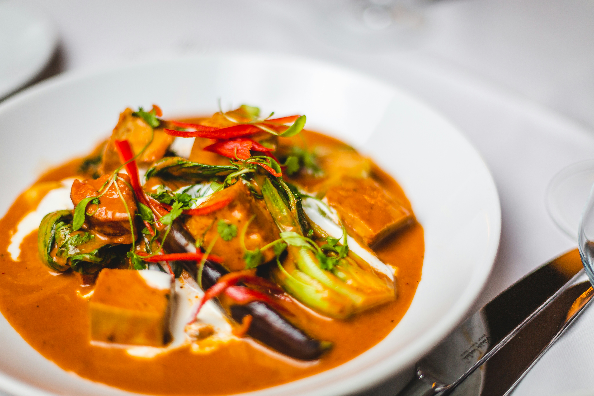

Thai red curry is a vibrant, spicy, and creamy dish made from a fragrant red chili paste simmered in rich coconut milk with meats, seafood, or vegetables.
To make a quick Thai red curry, sauté a couple of tablespoons of red curry paste in the thick cream from a can of coconut milk until aromatic, then stir in your choice of sliced meat or tofu and vegetables like bell peppers and green beans. Pour in the remaining coconut milk, let the mixture simmer until the protein is cooked through, and season with fish sauce and palm sugar before garnishing with fresh Thai basil.